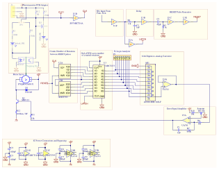
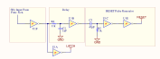
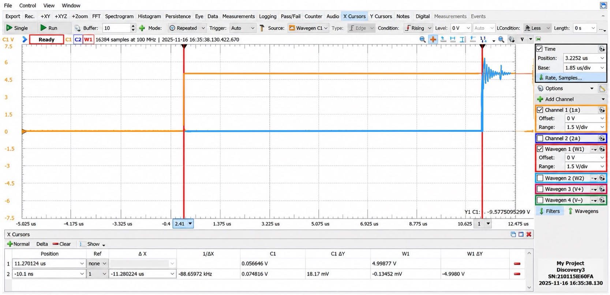
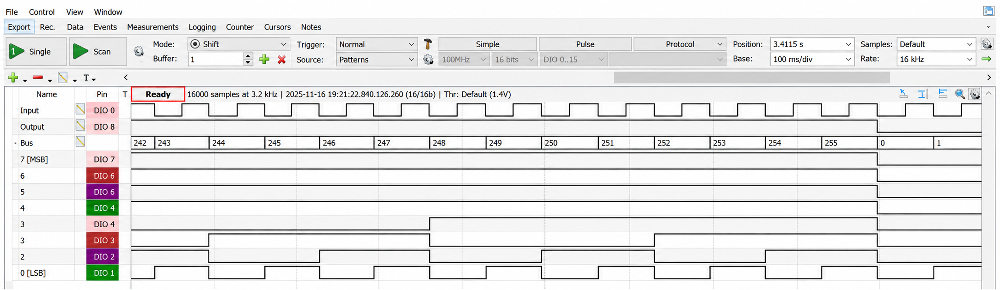
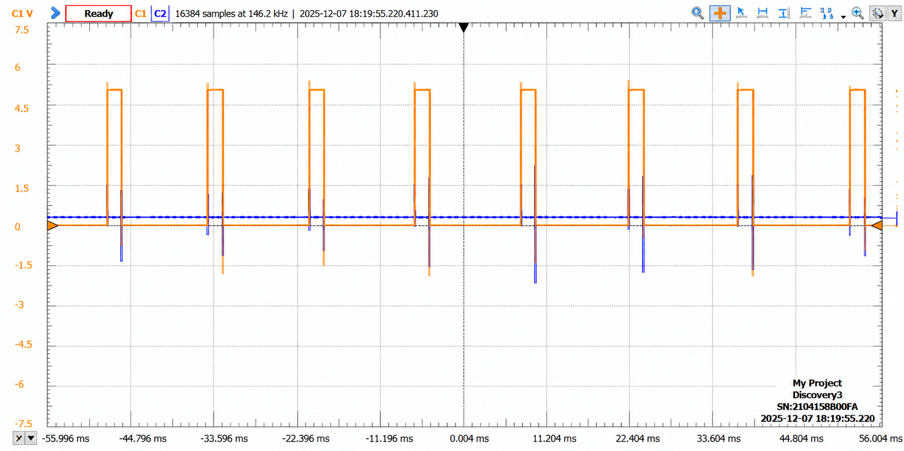
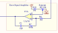
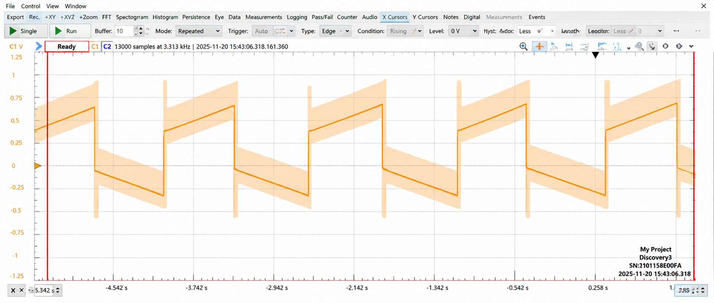
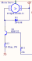
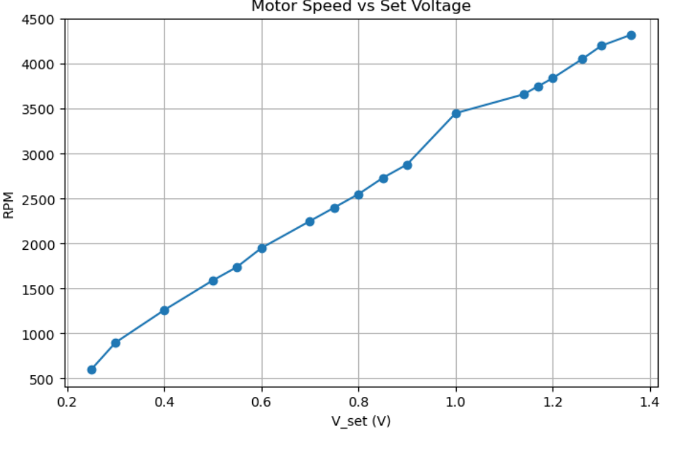

Motor Control Circuit
A closed-loop analog/digital circuit that sets and actively holds a DC motor's RPM, no microcontroller involved.
Circuit Debugging & AnalysisFeedback ControlDigital LogicOscilloscope


This circuit holds a DC motor at a set RPM using nothing but discrete logic and analog feedback, no microcontroller anywhere in the loop. A slotted disc on the motor shaft interrupts a phototransistor once per rotation; that pulse train is counted, latched, and converted back to an analog voltage, which an op-amp compares against a potentiometer's set-point, representing the target RPM, to drive a BJT controlling motor current. Every stage below was built and verified against its own oscilloscope measurements before being wired into the full loop.
Using a 5Hz input square wave, two Schmitt-trigger inverters generate the two timing signals the rest of the circuit runs on: LATCH tells the D-latch to grab the counter's current value, and RESET clears the counter afterward. These two cannot fire at the same instant, since if the counter resets before the latch grabs its value, that reading is lost. An RC network between the inverter stages delays RESET just enough to guarantee the latch always goes first.

The delay is set by the time constant of the first RC network: with R = 11 kΩ and C = 1 nF, τ = RC predicts a 11 µs delay. Measuring the actual gap between the input square wave and the delayed output at U1B with the oscilloscope delta gave 11.28 µs, confirming the delay is one time constant of charging.


Two 4-bit counters are chained into a single 256-count counter that tallies incoming pulses between RESET pulses. Normally, the CLK input would come from the phototransistor pulsing to represent the rotation of the motor. To test the counter, I manually sent an input signal to the CLK input, and used the logic analyzer to confirm clean counting from 0 up to 255, and since 255 is the largest value an 8-bit counter can hold, the next pulse correctly wraps it back to 0 rather than corrupting the count.

The latched count, a value between 0 and 255, represents the motor's speed. It is converted to an analog voltage through an R-2R resistor-ladder DAC, then sent through an op-amp buffer.

A 10-slit disc on the motor shaft interrupts an LED/phototransistor pair once per slit, turning rotation directly into the clock pulses the counter above measures. I manually spun the disc and watched the scope to confirm a clean square pulse train before using it as an input for the rest of the circuit.
The error-signal amplifier closes the loop, weighing the difference between the potentiometer's set-point (Vset) and the DAC's feedback voltage (Vin) through both a proportional path (R7) and an integral one (C1).

Differentiating the amplifier's governing equation shows the output slope reduces to Vset − Vin(t) for a square-wave input. With Vset at 2V and Vin swinging between 1.5V and 2.5V, that predicts a slope of ±0.5 V/s. The scope confirms it: the output switches between two slopes, measuring almost exactly ±0.5 V/s.

The amplifier's output drives a BJT that does the actual current switching for the motor. Small changes in base current from the error amplifier produce large changes in motor current, closing the loop.

Sweeping the set-point voltage and recording the resulting latch value at each step gave a linear relationship between Vset and motor RPM, right up until the motor hit its own mechanical ceiling, after that, no further increase in V_set had any effect.
This relationship between latch value and RPM was calculated from the sampling setup: since the D-latch samples once every 0.2 s (a 5 Hz LATCH signal) and the disc has 10 slits per rotation, RPM = latch value × 30.
